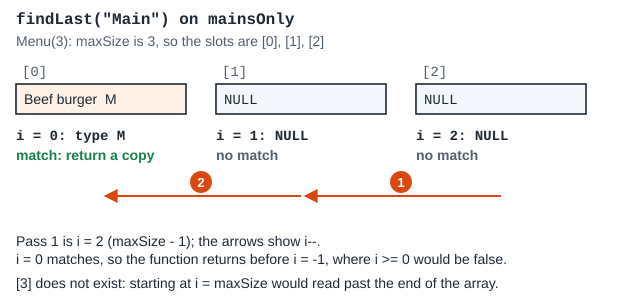
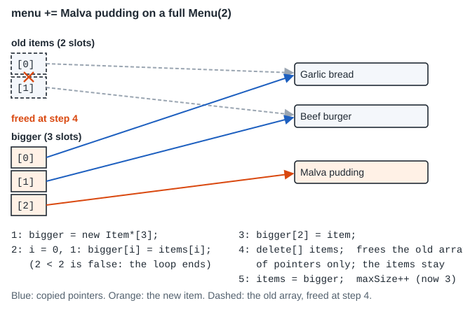
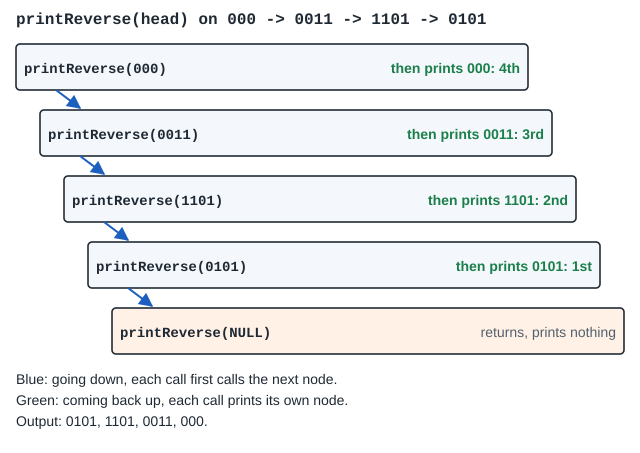
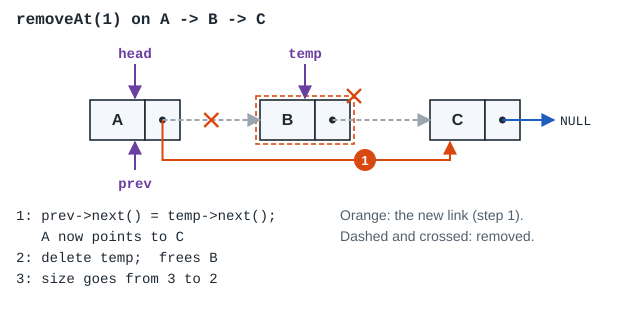
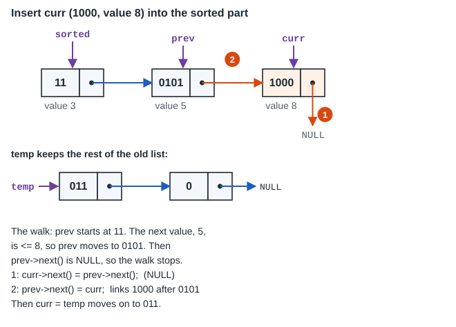

Worked practice questions
Try each question before you read its solution. Its files are in the practice downloads, one zip per section; a question ID such as A1-05 names a folder in that zip.
In each section the three questions go from level 1 to level 3. Rules that the paper does not give are marked Assumed, and they can differ from one question to the next.
| Topic | Questions |
|---|---|
| A_1 Exceptions | A1-05, A1-03, A1-08 |
| A_2 Operator overloading | A2-01, A2-04, A2-07 |
| A_3 Assignment operator | A3-01, A3-03, A3-04 |
| B_1 Recursion | B1-02, B1-06, B1-05 |
| B_2 Linked lists | B2-01, B2-03, B2-06 |
| B_3 Template specialisation | B3-01, B3-02, B3-05 |
A1-05: Menu::numberAbove counts items and throws
Warm-up (level 1 of 3) Practice question A1-05 for A_1. Its starter files and tests are in the A_1 practice download. The answer goes in A_1.cpp.
How many main courses cost more than R100? A count of 0 is a possible answer, but this question treats it as an error: the function throws instead of returning 0.
The line in Menu.h:
int numberAbove(string type, float value);- If
typeis not a valid name, throwInvalidType(type), before the loop. - Count the items of that type whose price is strictly greater than
value(price > value). SkipNULLslots. - If the count is 0, throw
NothingAboveMinimumValue(). Otherwise return the count.
Assumed
The type names and the exception messages, as on the Theory page (gaps 5, 7 and 8).
“Strictly greater” means >, not >=: an item that costs exactly value does not count. The exception class has no parameter. Its message is fixed: Nothing matching filter: above minimum value.
A menu with Beef burger (M, 120) and Veg curry (M, 95.5). numberAbove("Main", 100): 120 > 100 counts, 95.5 > 100 does not. The count is 1, so it returns 1.
Write this function before you open the solution. Use the rules above.
The same shape as averagePrice on the Theory page: the name chain first, then one loop over every slot, then the test of the count after the loop. The loop’s if now has three parts.
#include "Menu.h"
int Menu::numberAbove(string type, float value) {
char code;
if (type == "Starter") {
code = 'S';
} else if (type == "Main") {
code = 'M';
} else if (type == "Dessert") {
code = 'D';
} else {
throw InvalidType(type);
}
int count = 0;
for (int i = 0; i < maxSize; i++) {
// The NULL check comes first: && stops at the first false part.
if (items[i] != NULL && items[i]->getType() == code && items[i]->getPrice() > value) {
count++;
}
}
// No item is above the value.
if (count == 0) {
throw NothingAboveMinimumValue();
}
return count;
}The tables below explain the solution. Read them after you have written your own.
| Condition | True means | False means |
|---|---|---|
items[i] != NULL | The slot holds an item: test the next part. | An empty slot: skip it. The other parts are not tested. |
items[i]->getType() == code | The right type: test the price. | Another type: skip it, whatever its price. |
items[i]->getPrice() > value | Strictly above: count it. | Equal or below: skip it. |
count == 0 | Nothing counted: throw NothingAboveMinimumValue(). | Return the count. |
The menu in main.cpp has 6 slots: Garlic bread (S, 45.5), Beef burger (M, 120), Veg curry (M, 95.5), Malva pudding (D, 60), Soup (S, 50) and NULL. The third call is numberAbove("Main", 120):
i | Slot | Type 'M'? | price > 120? | count |
|---|---|---|---|---|
| 0 | Garlic bread | false | not tested | 0 |
| 1 | Beef burger | true | false (120 is not > 120) | 0 |
| 2 | Veg curry | true | false | 0 |
| 3 | Malva pudding | false | not tested | 0 |
| 4 | Soup | false | not tested | 0 |
| 5 | NULL | not tested | not tested | 0 |
count == 0, so it throws. The expected output:
Main above R100: 1 Main above R90: 2 NothingAboveMinimumValue caught: Exception: Nothing matching filter: above minimum value Starter above R45.5: 1 NothingAboveMinimumValue caught: Exception: Nothing matching filter: above minimum value InvalidType caught: Exception: Invalid type: Drink
Predict: numberAbove("Starter", 45.5). Which starters count?
Only Soup (50). Garlic bread costs exactly 45.5, and 45.5 > 45.5 is false. It returns 1.
>= instead of >: it builds, and valgrind is clean, but two lines are wrong. The third line should be the exception, and the fourth should count 1:
Main above R100: 1 Main above R90: 2 Main above R120: 1 Starter above R45.5: 2
The wrong class: throw NothingMatchingFilter(type); also builds. main.cpp then catches it in the NothingMatchingFilter& block, and the message is different:
NothingMatchingFilter caught: Exception: Nothing matching filter: Main NothingMatchingFilter caught: Exception: Nothing matching filter: Dessert
Repair: >, and the class the question names.
Same shape: A1-06 numberBelow uses price < value and throws NothingBelowMaximumValue(). A1-07 numberEqual uses price == value and throws NothingMatchingFilter(type). Only the comparison and the class change.
Write the condition of the loop’s if for numberBelow. Hint: keep the order of the three parts.
items[i] != NULL && items[i]->getType() == code && items[i]->getPrice() < value. The NULL test stays first.
Using the trace above, work out what numberAbove("Main", 90) and numberAbove("Dessert", 100) do.
For 90: Beef burger (120) and Veg curry (95.5) are both above 90, so it returns 2. For Dessert above 100: Malva pudding costs 60, so the count is 0 and it throws NothingAboveMinimumValue. Both match the expected output.
A1-03: Menu::findLast searches from the back and throws
Exam-typical (level 2 of 3) Practice question A1-03 for A_1. Its starter files and tests are in the A_1 practice download. The answer goes in A_1.cpp.
The newest starter on the menu is the one in the highest slot. To find it, search from the back. A loop that runs backwards can start one slot too late or stop one slot too early.
The line in Menu.h:
Item findLast(string type);- An invalid name throws
InvalidType(type), before the loop. - Otherwise return a copy of the matching item with the highest index. Skip
NULLslots. - If none matches, throw
StarterNotFound(),MainNotFound()orDessertNotFound().
The valid indexes are 0 to maxSize - 1. Do not read items[maxSize].
A backward loop: for (int i = maxSize - 1; i >= 0; i--). It starts at the last slot, maxSize - 1, and runs while i >= 0, so slot 0 is the last one tested. i-- takes 1 away after each pass.

For maxSize 3, the loop tests i = 2, 1, 0, and then i is -1: -1 >= 0 is false and the loop ends. That is three passes, one per slot.
Write this function before you open the solution. Use the rules above.
The same as findFirst on the Theory page, except for the loop’s first line. The first match found from the back is the last item, so it returns at once.
#include "Menu.h"
Item Menu::findLast(string type) {
char code;
if (type == "Starter") {
code = 'S';
} else if (type == "Main") {
code = 'M';
} else if (type == "Dessert") {
code = 'D';
} else {
throw InvalidType(type);
}
// Start at the last slot and move to the front. The first match found is the last item.
for (int i = maxSize - 1; i >= 0; i--) {
if (items[i] != NULL && items[i]->getType() == code) {
return *items[i];
}
}
if (code == 'S') {
throw StarterNotFound();
}
if (code == 'M') {
throw MainNotFound();
}
throw DessertNotFound();
}The tables below explain the solution. Read them after you have written your own.
| Condition | True means | False means |
|---|---|---|
i >= 0 | Slot i exists. Test it. | Slot 0 has been tested. Leave the loop and throw. |
items[i] != NULL && items[i]->getType() == code | The last item of this type: return a copy. | An empty slot or another type: go one slot toward the front. |
The second menu in main.cpp, mainsOnly, has 3 slots and holds only Beef burger in slot 0. Trace of findLast("Main"):
i | i >= 0 | Slot | Match? |
|---|---|---|---|
| 2 | true | NULL | no |
| 1 | true | NULL | no |
| 0 | true | Beef burger (M) | yes: return a copy |
| - | - | - | the loop never reaches -1 |
The expected output:
Last Starter: Soup (S) R50 Last Main: Veg curry (M) R95.5 Last Dessert: Malva pudding (D) R60 InvalidType caught: Exception: Invalid type: Drinks Last Main: Beef burger (M) R120 StarterNotFound caught: Exception: Item not found DessertNotFound caught: Exception: Item not found MainNotFound caught: Exception: Item not found
Predict: on the first menu (6 slots), findLast("Starter"). Which slots are tested?
Slot 5 (NULL), then slot 4 (Soup, S): a match. It returns Soup after two passes.
Two real runs, each with one change in the loop’s first line.
Starting at maxSize: for (int i = maxSize; i >= 0; i--). The output is right, but the first pass reads one slot past the end of the array:
Invalid read of size 8 Address 0x4e1e0b0 is 0 bytes after a block of size 48 alloc'd
Stopping at 1: i > 0 instead of i >= 0. It builds and valgrind is clean, but slot 0 is never tested. Beef burger in mainsOnly is in slot 0, so the fifth line of the output becomes:
MainNotFound caught: Exception: Item not found
It should be Last Main: Beef burger (M) R120. Repair: start at maxSize - 1 and run while i >= 0.
One line apart: findFirst and findLast share the name chain, the test inside the loop and the three throws. Only the loop’s first line differs. So if one of them is given in the A_1 folder, its code shows the rest of the other.
A menu has maxSize 4. List the values of i in for (int i = maxSize - 1; i >= 0; i--), and the value that ends the loop. Hint: test the condition before each pass.
3, 2, 1 and 0. Then i becomes -1, -1 >= 0 is false, and the loop ends.
The last call in main.cpp is showLast(empty, "Main"), on a menu with 2 empty slots. Trace it and write the line it prints.
The chain sets code = 'M'. Slots 1 and 0 are NULL, so the loop ends with no match. code == 'S' is false and code == 'M' is true, so it throws MainNotFound(). The line is MainNotFound caught: Exception: Item not found.
A1-08: Menu::printSummary catches each exception in the right order
Longer (level 3 of 3) Practice question A1-08 for A_1. Its starter files and tests are in the A_1 practice download. The answer goes in A_1.cpp.
Some A_1 questions ask you to catch exceptions instead of throwing them. Here one function calls two functions that can throw. It must print a different line for each kind of problem, and no exception may leave it.
The line in Menu.h:
bool printSummary(string type, float minPrice);Inside a try block, call findFirst(type) and then numberAbove(type, minPrice). Then:
| Case | What is printed | Return |
|---|---|---|
| no exception | <type>: first is <item>, <count> above R<minPrice> and a newline | true |
DessertNotFound | No desserts yet. , then e.printException() | false |
another NotFoundException | Not on the menu. , then e.printException() | false |
NothingAboveMinimumValue | Nothing above R<minPrice>. , then e.printException() | false |
any other Exception | Request failed. , then e.printException() | false |
Print the summary line only when both calls worked.
Order the catch blocks so that a derived class comes before its base class. DessertNotFound is a NotFoundException, and every class is an Exception. So DessertNotFound& comes before NotFoundException&, and Exception& comes last.
If findFirst("Dessert") throws DessertNotFound, the rest of the try block is skipped: numberAbove is never called. The first catch fits, prints its line, and the function goes on after the last catch to return false;.
Write this function before you open the solution. Use the rules above.
Both calls and the print go in the try block, in that order. The print is the last line of the block, so it runs only when neither call threw. Four catch blocks follow, derived classes first. One return false; after them serves every catch.
#include "Menu.h"
bool Menu::printSummary(string type, float minPrice) {
try {
Item first = findFirst(type);
int count = numberAbove(type, minPrice);
// Both calls worked, so print the whole line now.
cout << type << ": first is " << first << ", " << count << " above R" << minPrice << endl;
return true;
} catch (DessertNotFound& e) {
// A derived class must come before its base class (NotFoundException).
cout << "No desserts yet. ";
e.printException();
} catch (NotFoundException& e) {
cout << "Not on the menu. ";
e.printException();
} catch (NothingAboveMinimumValue& e) {
cout << "Nothing above R" << minPrice << ". ";
e.printException();
} catch (Exception& e) {
// The base class of all the others comes last.
cout << "Request failed. ";
e.printException();
}
return false;
}The tables below explain the solution. Read them after you have written your own.
| Thrown | First catch that fits | Why the earlier ones do not fit |
|---|---|---|
DessertNotFound | DessertNotFound& | it is the first block |
StarterNotFound or MainNotFound | NotFoundException& | they are not a DessertNotFound |
NothingAboveMinimumValue | NothingAboveMinimumValue& | it is not a NotFoundException |
InvalidType | Exception& | it is none of the three classes above |
The menu in main.cpp holds Garlic bread (S, 45.5), Beef burger (M, 120) and Veg curry (M, 95.5) in 5 slots. Each check call prints the line, then main.cpp prints what was returned.
| Call | What happens |
|---|---|
("Main", 100) | Beef burger is first; 1 main above 100. Prints the summary, returns true. |
("Starter", 45.5) | Garlic bread is first, but no starter is above 45.5: numberAbove throws. |
("Dessert", 10) | findFirst throws DessertNotFound. |
("Drink", 10) | findFirst throws InvalidType. |
(empty, "Starter", 0) | On the empty menu, findFirst throws StarterNotFound. It is not a DessertNotFound, so the NotFoundException& block runs. |
(empty, "Main", 0) | findFirst throws MainNotFound: the NotFoundException& block again. |
Main: first is Beef burger (M) R120, 1 above R100 returned true Nothing above R45.5. Exception: Nothing matching filter: above minimum value returned false No desserts yet. Exception: Item not found returned false Request failed. Exception: Invalid type: Drink returned false Not on the menu. Exception: Item not found returned false Not on the menu. Exception: Item not found returned false
Predict: on the first menu, check(menu, "Starter", 40). Does any call throw? Write the two lines it prints.
No call throws. findFirst returns Garlic bread, and Garlic bread (45.5) is the one starter above 40, so numberAbove returns 1. The summary line prints, and the function returns true:
Starter: first is Garlic bread (S) R45.5, 1 above R40 returned true
Printing in two parts: the start of the summary line printed after findFirst, and the rest after numberAbove. It builds and valgrind is clean. But when numberAbove throws, half a line is already printed:
Starter: first is Garlic bread (S) R45.5, Nothing above R45.5. Exception: Nothing matching filter: above minimum value
A base class first, or a catch by value: both stop the build under -Werror. These are the first lines g++ prints for each:
A_1.cpp:13:7: error: exception of type ‘DessertNotFound’ will be caught by earlier handler [-Werror=exceptions] A_1.cpp:20:24: error: catching polymorphic type ‘class Exception’ by value [-Werror=catch-value=]
Repair: print once, after both calls; catch by reference, derived classes first.
The caller side of every A_1 question: each practice main.cpp has a function like show with the same order of catch blocks. Reading it tells you which class each case must throw.
Suppose catch (NothingMatchingFilter& e) were added. Where must it go? Hint: which class is it derived from, and which class is derived from it?
After NothingAboveMinimumValue& (derived from it) and before Exception& (its base). Its place relative to the two not-found blocks does not matter, because the two families are not related.
Write the two lines that check(menu, "Main", 200) would print on the first menu.
Nothing above R200. Exception: Nothing matching filter: above minimum value returned false
findFirst("Main") works, but no main costs more than 200, so numberAbove throws NothingAboveMinimumValue. Nothing of the summary line is printed.
A2-01: operator<< for Item
Warm-up (level 1 of 3) Practice question A2-01 for A_2. Its starter files and tests are in the A_2 practice download. The answer goes in A_2.cpp.
cout << bread; should print Garlic bread (S) R45.5. Menu’s own operator<< uses this function for every slot, so one mistake here shows up in every menu line.
The line in the Item class:
friend ostream& operator<<(ostream& out, const Item& item);Print the name, a space, the type in round brackets, a space, R and the price. Print no newline. Write to out and return out.
Assumed
This print format, as in all the practice questions. The exam’s expected output decides.
It is a friend, not a member: the first line has no Item:: and no friend. It reads item.name, item.type and item.price directly. A float prints with no extra zeros: 120 prints as 120 and 60.25 as 60.25.
For Item('M', "Beef burger", 120) the pieces are Beef burger, (, M, ) R and 120: together Beef burger (M) R120.
Write this function before you open the solution. Use the rules above.
One output line that sends the five pieces to out, then return out;.
#include "Item.h"
ostream& operator<<(ostream& out, const Item& item) {
// A friend may read the private members. Write to out, not to cout, and print no newline.
out << item.name << " (" << item.type << ") R" << item.price;
return out;
}The tables below explain the solution. Read them after you have written your own.
| Line | Why |
|---|---|
out << item.name << ... | the stream comes from the caller; it may not be cout |
no endl | the caller decides where lines end: Menu’s operator<< adds endl after each item |
return out; | so that cout << burger << " | " << pudding can go on with the same stream |
cout << burger << " | " << pudding << endl; runs as four calls, from left to right. The first is this function with burger. It returns cout, which then prints " | ", and so on. The expected output:
Garlic bread (S) R45.5 Beef burger (M) R120 | Malva pudding (D) R60.25 Menu (max 3): [0] Garlic bread (S) R45.5 [1] Veg curry (M) R95.5 [2] empty
Predict: what would cout << menu; print for a menu of 3 slots if this function ended with << endl?
An empty line after every item, because Menu’s operator<< adds its own endl too. The run below shows it.
endl inside the function: it builds and valgrind is clean, but the line breaks are wrong everywhere:
Garlic bread (S) R45.5 Beef burger (M) R120 | Malva pudding (D) R60.25 Menu (max 3): [0] Garlic bread (S) R45.5 [1] Veg curry (M) R95.5 [2] empty
cout instead of out: with main.cpp, the output is the same as the expected output, because out is cout there. A test that passes a different stream, for example a stream that writes into a string, would show the mistake. Write to out every time.
Same pattern: A2-03, operator<< for Exception, prints Exception: and e.msg, with no newline. The Theory page shows why it cannot call printException().
Why does this function need to be a friend of Item? Hint: which members does it read?
It reads name, type and price, which are private. A friend may read them. It could also call the three const getters instead.
Write the output of cout << Item('D', "Ice cream", 35) << "!" << endl;.
Ice cream (D) R35!
No newline comes from the function, so the ! follows the price at once.
A2-04: Menu::operator+ adds an item or deletes it
Exam-typical (level 2 of 3) Practice question A2-04 for A_2. Its starter files and tests are in the A_2 practice download. The answer goes in A_2.cpp.
menu + new Item(...) hands a new item to the menu. The menu stores it, or, when it is full, must free it, because no other code will.
The line in Menu.h:
Menu& operator+(Item* item);- Store
itemin the firstNULLslot, then stop looking. - If no slot is
NULL, deleteitem. The menu does not change. - In both cases return
*this.
Assumed
The full-menu rule: Figure 1 shows no return type and no “menu full” exception (gap 1).
menu + a calls menu.operator+(a). Returning Menu&, the menu itself, lets menu + a + b add b to the same menu. The Theory page shows the picture of both cases.
A Menu(1) that is empty. menu + p: slot 0 is NULL, so it stores p and returns. menu + q: no NULL slot, so it deletes q and returns.
Write this function before you open the solution. Use the rules above.
A loop that returns at the first NULL slot. If the loop ends, every slot was full: delete the item, then return.
#include "Menu.h"
Menu& Menu::operator+(Item* item) {
for (int i = 0; i < maxSize; i++) {
if (items[i] == NULL) {
items[i] = item;
// Stop at the first empty slot; the item must be stored only once.
return *this;
}
}
// The menu is full. The menu owns the item, so it must delete it.
delete item;
return *this;
}The tables below explain the solution. Read them after you have written your own.
| Condition | True means | False means |
|---|---|---|
i < maxSize | Slot i exists: test it. | No slot was free: delete the item. |
items[i] == NULL | Store the item here and return at once. | The slot is taken: try the next one. |
The lines of main.cpp:
| Line | Effect |
|---|---|
menu + new Item('S', "Garlic bread", 45.5); | slot 0 |
menu + ... Beef burger ... + ... Malva pudding ...; | slots 1 and 2 |
menu + new Item('M', "Veg curry", 95.5); | no free slot: Veg curry is deleted |
Menu (max 3): [0] Garlic bread (S) R45.5 [1] empty [2] empty Menu (max 3): [0] Garlic bread (S) R45.5 [1] Beef burger (M) R120 [2] Malva pudding (D) R60 Menu (max 3): [0] Garlic bread (S) R45.5 [1] Beef burger (M) R120 [2] Malva pudding (D) R60
Predict: without the return *this; inside the loop, what happens to Garlic bread on an empty Menu(3)?
The loop goes on, and every NULL slot gets the same pointer. One item now sits in three slots.
No return in the loop: the first print shows the one item three times. Later items find no free slot and are deleted, so every print is the same:
Menu (max 3): [0] Garlic bread (S) R45.5 [1] Garlic bread (S) R45.5 [2] Garlic bread (S) R45.5
At the end, ~Menu() deletes the same item three times: Invalid free() / delete / delete[] / realloc()
No delete item; for a full menu: the output is right, but Veg curry is never freed: definitely lost: 48 bytes in 1 blocks
A different rule for a full menu: A2-07’s operator+= grows the array instead of deleting the item. It is the next example.
Why can main.cpp not delete the item itself when the menu is full? Hint: what does the caller know after the call?
The caller cannot tell whether the item was stored. Deleting a stored item would free memory that the menu still uses. So the rule gives the item to the menu in every case.
A Menu(2) holds Soup. Write the menu after menu + new Item('M', "Pie", 80) + new Item('D', "Tart", 40); and say what happens to the Tart.
Slot 0 Soup, slot 1 Pie. The second + finds no NULL slot, so operator+ deletes the Tart.
A2-07: Menu::operator+= grows the array when the menu is full
Longer (level 3 of 3) Practice question A2-07 for A_2. Its starter files and tests are in the A_2 practice download. The answer goes in A_2.cpp.
An array cannot grow. To make room for one more item, the menu needs a new, bigger array, the old pointers copied into it, and the old array freed.
The line in Menu.h:
Menu& operator+=(Item* item);- If there is a
NULLslot, store the item in the first one and stop. - Otherwise make an array of
maxSize + 1pointers, copy the old pointers into slots 0 tomaxSize - 1, and store the item in slotmaxSize. - Delete the old array with
delete[], but not the items. Pointitemsto the new array and add 1 tomaxSize. - Return
*this.
Assumed
This growing rule belongs to this practice question. The exam question decides.
The pointers are copied, not the items. After the copy, both arrays point to the same items for a moment. Then delete[] items; frees only the old array of pointers, and the items now belong to the new array.

A full Menu(1) holding Soup. menu += pie: a new array of 2 slots, slot 0 gets the Soup pointer, slot 1 gets Pie, the old array of 1 slot is freed, and maxSize becomes 2.
Write this function before you open the solution. Use the rules above.
The free-slot loop first, as in operator+. Then the five steps for a full menu, in order: new array, copy, store, free the old array, update items and maxSize.
#include "Menu.h"
Menu& Menu::operator+=(Item* item) {
// Use a free slot if there is one.
for (int i = 0; i < maxSize; i++) {
if (items[i] == NULL) {
items[i] = item;
return *this;
}
}
// The menu is full: make an array with one more slot.
Item** bigger = new Item*[maxSize + 1];
for (int i = 0; i < maxSize; i++) {
bigger[i] = items[i];
}
bigger[maxSize] = item;
// Delete the old array of pointers only. The items now belong to the new array.
delete[] items;
items = bigger;
maxSize++;
return *this;
}The tables below explain the solution. Read them after you have written your own.
| Condition | True means | False means |
|---|---|---|
items[i] == NULL | A free slot: store the item and return. | Taken: test the next slot. |
i < maxSize | (copy loop) Copy pointer i. maxSize is still the old size here. | All old pointers are copied: store the item in slot maxSize. |
maxSize++ comes last, because bigger[maxSize] and the copy loop need the old value.
In main.cpp, a Menu(2) is filled by the first two += calls. The third, Malva pudding, grows it to 3. The copy loop of that call, with maxSize still 2:
i | i < maxSize | Copy |
|---|---|---|
| 0 | 0 < 2, true | bigger[0] gets the pointer to Garlic bread |
| 1 | 1 < 2, true | bigger[1] gets the pointer to Beef burger |
| 2 | 2 < 2, false: the loop ends | bigger[2] = item; stores Malva pudding |
The last line, (menu += veg) += cream, grows it to 4 and then to 5. Each grow copies maxSize pointers: 3, then 4. The expected output:
Menu (max 2): [0] Garlic bread (S) R45.5 [1] Beef burger (M) R120 Menu (max 3): [0] Garlic bread (S) R45.5 [1] Beef burger (M) R120 [2] Malva pudding (D) R60 Menu (max 5): [0] Garlic bread (S) R45.5 [1] Beef burger (M) R120 [2] Malva pudding (D) R60 [3] Veg curry (M) R95.5 [4] Ice cream (D) R35
Predict: how many new Item*[...] arrays does main.cpp make in total, counting the one in the constructor?
Four: the constructor’s array of 2, then arrays of 3, 4 and 5. Each old one is freed by delete[], and the last one by ~Menu().
Deleting the items with the old array: the new array then points to freed items. The output may even look right, because the freed bytes were not reused yet. valgrind reports:
Invalid read of size 8 Invalid free() / delete / delete[] / realloc()
No maxSize++: the menu keeps printing 2 slots. Each grow still frees the old array, but it stores the new item in a slot that is never counted, so that item is lost: Malva pudding, Veg curry and Ice cream, 3 items of 48 bytes. The first two of the three menus it prints, then valgrind:
Menu (max 2): [0] Garlic bread (S) R45.5 [1] Beef burger (M) R120 Menu (max 2): [0] Garlic bread (S) R45.5 [1] Beef burger (M) R120 definitely lost: 144 bytes in 3 blocks
Same steps, other direction: A2-08’s operator- removes an item and moves the later items one slot toward the front. It too must keep maxSize and the array in step.
Why is delete[] items; right here and delete items; wrong? Hint: how was the array made?
The array was made with new Item*[...], an array form. Memory from new[] must be freed with delete[]. valgrind reports a mismatch otherwise.
A full Menu(3) gets menu += p;. List every pointer that exists right after bigger[maxSize] = item;, and say which ones still exist after maxSize++.
Right after storing: the old array (3 pointers) and bigger (4 pointers), both pointing to the same 3 items, plus p in slot 3 of bigger. After the last lines: the old array is freed, items is bigger, and maxSize is 4. The 4 items are untouched.
A3-01: Item::operator=
Warm-up (level 1 of 3) Practice question A3-01 for A_3. Its starter files and tests are in the A_3 practice download. The answer goes in A_3.cpp.
Item owns no memory, so its operator= only copies three values. It still needs the self-check and return *this;, the first and last of the four steps.
The line in the Item class:
Item& operator=(const Item& other);Copy type, name and price. a = a; leaves a unchanged, and a = b = c; works.
With no pointer members, steps 2 and 3 of the four steps become: copy each member. There is nothing to free and nothing to make with new.
After a = b; with b = Beef burger (M, 120), a prints Beef burger (M) R120. b is not changed.
Write this function before you open the solution. Use the rules above.
Self-check, three assignments, return.
#include "Item.h"
Item& Item::operator=(const Item& other) {
if (this == &other) {
return *this;
}
type = other.type;
name = other.name;
price = other.price;
return *this;
}The tables below explain the solution. Read them after you have written your own.
| Condition | True means | False means |
|---|---|---|
this == &other | Self-assignment: return at once. | Copy the three members. |
For Item the self-check is not needed for safety, because nothing is freed. It is kept so that every operator= has the same shape.
a = b = c; runs b = c first, which returns b. Then a = b copies the new b. The expected output:
a: Soup (S) R50 b: Beef burger (M) R120 after a = b, a: Beef burger (M) R120 type M, name Beef burger, price 120 after a = a, a: Beef burger (M) R120 after a = b = c, a: Malva pudding (D) R60 b: Malva pudding (D) R60
Predict: what does a.getPrice() print after a = b;?
120, the price of Beef burger.
No return *this;:
A_3.cpp:9:11: error: control reaches end of non-void function [-Werror=return-type]
One member forgotten: without price = other.price;, the type and name change but the price stays. It builds and valgrind is clean. Lines 3 to 6 of the output:
after a = b, a: Beef burger (M) R50 type M, name Beef burger, price 50 after a = a, a: Beef burger (M) R50 after a = b = c, a: Malva pudding (D) R50
Repair: one line per member in the header.
From values to memory: Menu’s operator= on the Theory page adds steps 2 and 3 for its array and items. Item’s copy constructor, given in Item.cpp, copies the same three members.
Which object does type = other.type; change in a = b;? Hint: which object is *this?
a, the object on the left. other is b.
After a = b = c; in main.cpp, what do a and b print?
Both print Malva pudding (D) R60, the values of c.
A3-03: Menu copy constructor
Exam-typical (level 2 of 3) Practice question A3-03 for A_3. Its starter files and tests are in the A_3 practice download. The answer goes in A_3.cpp.
Menu b(a); makes a new menu as a copy of a. The A_3 topic covers the copy constructor too: the question may ask for it, because Menu owns memory and Figure 1 gives it none.
The line in Menu.h:
Menu(const Menu& other);The new menu has the same maxSize. Slot i holds a new copy of other’s item, or NULL. Changing other later must not change the copy.
A copy constructor runs for Menu b(a);, for Menu c = b; (a new object, so not operator=), and when a Menu is passed by value. The object is new: it has no old memory, so only step 3 of the four steps is needed, and nothing is returned.
For a = Menu(2) holding Soup: b gets maxSize 2, a new array of 2 slots, a new Soup in slot 0 and NULL in slot 1.
Write this function before you open the solution. Use the rules above.
Step 3 of operator=, alone.
#include "Menu.h"
Menu::Menu(const Menu& other) {
maxSize = other.maxSize;
items = new Item*[maxSize];
for (int i = 0; i < maxSize; i++) {
if (other.items[i] == NULL) {
items[i] = NULL;
} else {
items[i] = new Item(*other.items[i]);
}
}
}The tables below explain the solution. Read them after you have written your own.
| Condition | True means | False means |
|---|---|---|
other.items[i] == NULL | Copy the empty slot as NULL. | Make a new item with Item’s copy constructor. |
In main.cpp, a is a Menu(3) holding Garlic bread and Beef burger. The loop of Menu b(a);, after maxSize = 3 and the new array:
i | i < maxSize | other.items[i] == NULL | Slot i of b |
|---|---|---|---|
| 0 | 0 < 3, true | false | new Item: a new Garlic bread |
| 1 | 1 < 3, true | false | new Item: a new Beef burger |
| 2 | 2 < 3, true | true | NULL |
| 3 | 3 < 3, false: the loop ends | - | - |
Then Malva pudding is added to a only. b keeps its empty slot 2. The expected output:
a: Menu (max 3): [0] Garlic bread (S) R45.5 [1] Beef burger (M) R120 [2] empty b, made with Menu b(a): Menu (max 3): [0] Garlic bread (S) R45.5 [1] Beef burger (M) R120 [2] empty a after adding Malva pudding: Menu (max 3): [0] Garlic bread (S) R45.5 [1] Beef burger (M) R120 [2] Malva pudding (D) R60 b has not changed: Menu (max 3): [0] Garlic bread (S) R45.5 [1] Beef burger (M) R120 [2] empty c, made with Menu c = b: Menu (max 3): [0] Garlic bread (S) R45.5 [1] Beef burger (M) R120 [2] empty d, a copy of an empty menu: Menu (max 2): [0] empty [1] empty
Predict: which constructor runs for Menu c = b;?
The copy constructor. c is made on that line, so it is a new object, even though the line has =.
Copying the pointer: items = other.items;. The two menus share one array. Adding to a also changes b, and the two destructors free the same memory:
b has not changed: Menu (max 3): [0] Garlic bread (S) R45.5 [1] Beef burger (M) R120 [2] Malva pudding (D) R60 Invalid free() / delete / delete[] / realloc()
No NULL test: new Item(*other.items[i]) on an empty slot crashes at once:
Invalid read of size 1 Address 0x0 is not stack'd, malloc'd or (recently) free'd Process terminating with default action of signal 11 (SIGSEGV)
Same step: step 3 of Menu’s operator= (Theory page) is this whole function. In an exam, a correct copy constructor is a good start for an operator=, and the other way round.
Why is there no delete in a copy constructor? Hint: what did the object own before this line ran?
Nothing. The object did not exist before, so it has no old array or items to free.
The last part of main.cpp copies an empty Menu(2). Write what d prints, and say how many news the copy made.
Menu (max 2): [0] empty [1] empty
One new: the array of 2 slots. Both slots of other are NULL, so no item is made.
A3-04: Menu::operator= that keeps its own size
Longer (level 3 of 3) Practice question A3-04 for A_3. Its starter files and tests are in the A_3 practice download. The answer goes in A_3.cpp.
A question can change one rule of operator=. Here the menu on the left keeps its own number of slots. Items that do not fit are not copied.
- After
a = b;,akeeps its ownmaxSize. All ofa’s old items are deleted. - For every slot number that both menus have, slot
iofagets a new copy of slotiofb, or staysNULL. - Extra slots of
bare not copied. Extra slots ofaareNULL. a = a;anda = b = c;work.
Assumed
This rule (a keeps its own size) belongs to this practice question. The exam question decides.
The array stays, so step 2 frees only the items and sets each slot to NULL. Step 3 copies only while i is a valid index of both arrays.
a has 2 slots and b has 4 with 3 items. After a = b;, a holds copies of b’s slots 0 and 1. Slot 2 of b does not fit.
Write this function before you open the solution. Use the rules above.
Self-check; free each item and reset its slot; copy while both indexes are valid; return.
#include "Menu.h"
Menu& Menu::operator=(const Menu& other) {
if (this == &other) {
return *this;
}
// Empty this menu. The array stays: its size (maxSize) does not change.
for (int i = 0; i < maxSize; i++) {
delete items[i];
items[i] = NULL;
}
// Copy slot i of other into slot i of this menu, for every slot that both menus have.
for (int i = 0; i < maxSize && i < other.maxSize; i++) {
if (other.items[i] != NULL) {
items[i] = new Item(*other.items[i]);
}
}
return *this;
}The tables below explain the solution. Read them after you have written your own.
| Condition | True means | False means |
|---|---|---|
i < maxSize && i < other.maxSize | Slot i exists in both menus. | One of the arrays has ended: stop copying. |
other.items[i] != NULL | Copy the item. | Leave the slot as NULL (step 2 set it). |
Section 1 of main.cpp runs a = b;: a has 2 slots, and b has 4 with 3 items. After step 2, both slots of a are NULL. The copy loop:
i | i < maxSize (2) | i < other.maxSize (4) | other.items[i] != NULL | Slot i of a |
|---|---|---|---|---|
| 0 | true | true | true | a new Garlic bread |
| 1 | true | true | true | a new Beef burger |
| 2 | false: the loop ends | not tested (&& stops) | - | - |
Malva pudding, in slot 2 of b, is not copied. Section 2 runs b = c;: b has 4 slots, c has 1. Now the other part ends the loop:
i | i < maxSize (4) | i < other.maxSize (1) | other.items[i] != NULL | Slot i of b |
|---|---|---|---|---|
| 0 | true | true | true | a new Lemon tart |
| 1 | true | false: the loop ends | - | stays NULL |
After it, b holds Lemon tart and three empty slots. The expected output:
--- 1. b has more items than a can hold --- a after a = b: Menu (max 2): [0] Garlic bread (S) R45.5 [1] Beef burger (M) R120 --- 2. c has fewer items than b --- b after b = c: Menu (max 4): [0] Lemon tart (D) R55 [1] empty [2] empty [3] empty --- 3. the copy is deep --- b after adding Veg curry: Menu (max 4): [0] Lemon tart (D) R55 [1] Veg curry (M) R95.5 [2] empty [3] empty c has not changed: Menu (max 1): [0] Lemon tart (D) R55 --- 4. self-assignment --- a after a = a: Menu (max 2): [0] Garlic bread (S) R45.5 [1] Beef burger (M) R120 --- 5. chaining --- a after a = b = c: Menu (max 2): [0] Lemon tart (D) R55 [1] empty
Predict: section 5 runs a = b = c;. After b = c, b holds Lemon tart and three empty slots. How many passes does the copy loop of a = b make, and which part of the test ends it?
Two. At i = 0 it copies Lemon tart. At i = 1 slot 1 of b is NULL, so nothing is copied. At i = 2, i < maxSize is false, because a has 2 slots.
Testing only i < other.maxSize: section 1 writes a third item into a’s array of 2 slots. The output looks right, but valgrind reports:
Invalid write of size 8 Address 0x4e1f0d0 is 0 bytes after a block of size 16 alloc'd definitely lost: 48 bytes in 1 blocks
Not setting the slot to NULL after delete: slots that receive no copy still hold the freed items. b then shows old items that were freed:
Menu (max 4): [0] Lemon tart (D) R55 [1] Beef burger (M) R120 [2] Malva pudding (D) R60 [3] empty
valgrind reports reads of the freed items: Invalid read of size 8
Read the rules of each question: A3-02 (Theory page) copies the size; this one keeps it. The four steps stay, but step 2 and step 3 follow the question.
Why does step 2 here write items[i] = NULL;, while A3-02 does not? Hint: what happens to the array in each?
A3-02 frees the whole array, so its slots are never read again. Here the array stays and is read later, so each freed slot must be reset.
After section 5, a = b = c;, what does a print? a has 2 slots, b 4, and c holds Lemon tart in 1 slot.
Menu (max 2): [0] Lemon tart (D) R55 [1] empty
b = c runs first. Then a = b copies slot 0 (Lemon tart) and slot 1 (NULL).
B1-02: Binary::countOnes
Warm-up (level 1 of 3) Practice question B1-02 for B_1. Its starter files and tests are in the B_1 practice download. The answer goes in B_1.cpp.
How many 1 bits does 10110 have? With recursion, each call looks at one bit and asks the next call to count the rest.
Assumed
No loops and no helper functions, as in every B_1 practice question.
The line in Binary.h:
int countOnes(int index);Return the number of 1 bits from index to the end. countOnes(0) on 10110 is 3, and countOnes(2) is 2 (the bits 110). An index below 0, or index >= size, returns 0.
This one walks to the right: the recursive call uses index + 1, and the base case is index >= size, past the last bit. toDecimal on the Theory page walked to the left.
For "1": countOnes(0) sees a 1 and returns 1 + countOnes(1). countOnes(1) is past the end and returns 0. So the answer is 1.
Write this function before you open the solution. Use the rules above.
Stop test first, then this bit plus the count of the rest.
#include "Binary.h"
// Returns the number of 1 bits from index to the end of the array.
int Binary::countOnes(int index) {
// Invalid index (less than 0) or past the last bit: nothing to count.
if (index < 0 || index >= size) {
return 0;
}
// Recursive case: this bit (1 or 0) plus the 1 bits after it.
if (array[index]) {
return 1 + countOnes(index + 1);
}
return countOnes(index + 1);
}The tables below explain the solution. Read them after you have written your own.
| Condition | True means | False means |
|---|---|---|
index < 0 || index >= size | No bit here: return 0, with no call. | Bit index exists. |
array[index] | A 1: return 1 plus the count of the rest. | A 0: return the count of the rest. |
Call on 10110 | Bit | Returns |
|---|---|---|
countOnes(0) | 1 | 1 + 2 = 3 |
countOnes(1) | 0 | 0 + 2 = 2 |
countOnes(2) | 1 | 1 + 1 = 2 |
countOnes(3) | 1 | 1 + 0 = 1 |
countOnes(4) | 0 | 0 + 0 = 0 |
countOnes(5) | none: 5 >= 5 | 0 |
10110 from index 0: 3 10110 from index 2: 2 10110 from index 4: 0 10110 from index 5: 0 10110 from index -1: 0
Predict: how many calls does countOnes(0) make on a string of 5 bits?
Six: indexes 0 to 4, and then 5, the base case.
index > size instead of index >= size: the call with index = 5 reads array[5], one past the end. The output happens to be right, but valgrind reports:
Invalid read of size 1 Address 0x4e1e085 is 0 bytes after a block of size 5 alloc'd
Memory is marked (Assumed HRMS rule), so this loses marks. Repair: >=. The last valid index is size - 1.
Same direction, two ends: B1-03’s isPalindrome(start, end) moves both ends inward: isPalindrome(start + 1, end - 1). Its base case is start >= end.
Write the recursive case for counting the 0 bits instead. Hint: only the test of the bit changes.
if (!array[index]) { return 1 + countZeros(index + 1); } and then return countZeros(index + 1);. ! means “not”.
Trace countOnes(2) on 0111. List each call and its return value.
countOnes(4) = 0 (past the end). countOnes(3) = 1 + 0 = 1. countOnes(2) = 1 + 1 = 2. It returns 2.
B1-06: BinaryStrings::printReverse
Exam-typical (level 2 of 3) Practice question B1-06 for B_1. Its starter files and tests are in the B_1 practice download. The answer goes in B_1.cpp.
A list can only be walked forwards, from the head. Yet recursion can print it backwards: each call prints its own node only after the calls for the later nodes have finished.
The line in BinaryStrings.h:
void printReverse(Node<Binary>* curr);Print the strings from the last node back to curr, each with cout and endl. A NULL curr prints nothing.
Where the work sits in a recursive function decides the order. Work before the call happens on the way down, from the head. Work after the call happens on the way back up, from the last node.

A list A -> B. printReverse(A) calls printReverse(B), which calls printReverse(NULL). That returns at once. Then B prints, then A.
Write this function before you open the solution. Use the rules above.
Base case: curr == NULL. Recursive case: the call for the rest first, then the print.
#include "BinaryStrings.h"
// Prints the strings from the last node back to curr, one string per line.
void BinaryStrings::printReverse(Node<Binary>* curr) {
// Base case: past the last node, so there is nothing to print.
if (curr == NULL) {
return;
}
// Recursive case: print the nodes after this one first, then this node.
printReverse(curr->next());
cout << curr->getData() << endl;
}The tables below explain the solution. Read them after you have written your own.
| Condition | True means | False means |
|---|---|---|
curr == NULL | Past the last node: return without printing. | Print the rest (backwards), then this node. |
| Call | Calls | Prints after the call returns |
|---|---|---|
printReverse(000) | printReverse(0011) | 000 (last) |
printReverse(0011) | printReverse(1101) | 0011 |
printReverse(1101) | printReverse(0101) | 1101 |
printReverse(0101) | printReverse(NULL) | 0101 (first) |
printReverse(NULL) | - | nothing |
000 -> 0011 -> 1101 -> 0101 Reverse: 0101 1101 0011 000 Reverse from the second node: 0101 1101 0011 Reverse of an empty list: (end)
Predict: what does printReverse(list.getHead()->next()) print?
0101, 1101 and 0011, one per line. The head, 000, is before the starting node, so it is not printed.
The print before the call: it builds and valgrind is clean, but the list prints forwards:
Reverse: 000 0011 1101 0101
Repair: move the cout line below the call.
Same base case: B1-04 (Theory page) and B1-05 also stop at curr == NULL and call with curr->next(). They return a count instead of printing.
What change makes the function print the list forwards instead? Hint: look at the order of the last two lines.
The last two lines swap places: print first, then call. That is the broken version above.
For a list of one node, 11, list the calls of printReverse(head) and what each prints.
printReverse(11) calls printReverse(NULL), which prints nothing. Then it prints 11. Two calls, one line.
B1-05: BinaryStrings::calculatePos with a node and a bit index
Longer (level 3 of 3) Practice question B1-05 for B_1. Its starter files and tests are in the B_1 practice download. The answer goes in B_1.cpp.
calculatePos is on Figure 2. A B_1 question could ask for it with recursion and no loops. Then one function must walk the nodes and the bits of each string, with one call per step.
Assumed
“Pos” means positive: bit 0 (the sign bit) is 0 and at least one later bit is 1 (gap 6).
The line in BinaryStrings.h:
int calculatePos(Node<Binary>* curr, int index);indexis the bit ofcurrthat this call checks. The first call iscalculatePos(getHead(), 1).- A
NULLcurrreturns 0. Anindexbelow 1 returns 0. - Past the last bit, or a sign bit of 1: this string is not positive. Go to the next node, at bit 1.
- Bit
indexis 1: count this string and go to the next node, at bit 1. Bitindexis 0: check bitindex + 1of the same node.
Two parameters change, in two kinds of call: calculatePos(curr->next(), 1) moves to the next string, and calculatePos(curr, index + 1) moves to the next bit of the same string. Every call does one of the two, so the walk ends.
For one node 01: (01, 1): size 2, sign bit 0, bit 1 is 1: return 1 + calculatePos(NULL, 1) = 1 + 0 = 1.
Write this function before you open the solution. Use the rules above.
Four tests in order: the end of the list, the invalid index, “not positive” (with the size test before [0]), and “found a 1”. The last line moves to the next bit.
#include "BinaryStrings.h"
// Counts the positive strings from curr to the end of the list.
// A string is positive when its first bit (the sign bit) is 0 and at least one
// later bit is 1. index is the bit of curr that is checked in this call.
int BinaryStrings::calculatePos(Node<Binary>* curr, int index) {
// Base case: past the last node (this also covers an empty list).
if (curr == NULL) {
return 0;
}
// Invalid input: index 0 is the sign bit, so the search starts at 1 or later.
if (index < 1) {
return 0;
}
// This string is not positive: no 1 was found before the end of the string,
// or the sign bit is 1. The size test comes first, so bit 0 of an empty
// string is never read. Move to the next node and start again at bit 1.
if (index >= curr->getData().getSize() || curr->getData()[0]) {
return calculatePos(curr->next(), 1);
}
// A 1 after a 0 sign bit: this string is positive. Count it and move on.
if (curr->getData()[index]) {
return 1 + calculatePos(curr->next(), 1);
}
// This bit is 0: check the next bit of the same string.
return calculatePos(curr, index + 1);
}The tables below explain the solution. Read them after you have written your own.
| Condition | True means | False means |
|---|---|---|
curr == NULL | The end of the list: return 0. | There is a string to check. |
index < 1 | Invalid: return 0. | A valid bit position. |
index >= curr->getData().getSize() || curr->getData()[0] | No 1 was found, or the sign bit is 1: move to the next node, at bit 1. For an empty string the size test is true, so bit 0 is never read. | Bit index exists and the sign bit is 0. |
curr->getData()[index] | A 1: count this string, move to the next node. | A 0: try the next bit of this string. |
For 000 -> 0011 -> 1101 -> 0101:
| Call | Which test is true | Next call |
|---|---|---|
(000, 1) | none: bit 1 is 0 | (000, 2) |
(000, 2) | none: bit 2 is 0 | (000, 3) |
(000, 3) | 3 >= 3: not positive | (0011, 1) |
(0011, 1) | none: bit 1 is 0 | (0011, 2) |
(0011, 2) | bit 2 is 1: count | 1 + (1101, 1) |
(1101, 1) | sign bit is 1 | (0101, 1) |
(0101, 1) | bit 1 is 1: count | 1 + (NULL, 1) |
(NULL, 1) | curr == NULL | returns 0 |
So it returns 1 + 1 = 2.
Empty: 0 positive 000 -> 0011 -> 1101 -> 0101: 2 positive from 1101: 1 positive invalid index 0: 0
Predict: calculatePos(third, 1), where third is the node 1101.
1101 has sign bit 1, so it is skipped. 0101 counts. It returns 1.
Not resetting the index: calculatePos(curr->next(), index) when moving to the next node. With the given main.cpp, this version prints exactly the expected output, and valgrind is clean. The mistake is still there.
In the trace above, the walk leaves 000 at index 3, so it would test bit 3 of 0011. That bit is 1, so 0011 still counts. A string such as 0100, whose only 1 is bit 1, would be missed if it came after 000. Matching one main.cpp is not proof. Test the cases in the question’s rules too.
The loop version: the reference calculatePos() (Theory page, B_2) does the same check with a while over the nodes and a for over the bits. Here each loop became a kind of call.
Why must the size test come before curr->getData()[0] in the third if? Hint: think of a string with 0 bits.
An empty string has no bit 0. || stops at the first true part, and for an empty string index >= 0 is already true, so [0] is never read.
Trace calculatePos(head, 1) for the list 0 -> 001. How many calls are made, and what is returned?
(0, 1): 1 >= size 1, not positive: (001, 1). Bit 1 is 0: (001, 2). Bit 2 is 1: 1 + (NULL, 1). (NULL, 1) returns 0. Four calls, and it returns 1.
B2-01: BinaryStrings::append
Warm-up (level 1 of 3) Practice question B2-01 for B_2. Its starter files and tests are in the B_2 practice download. The answer goes in B_2.cpp.
prepend adds at the front in two lines. Adding at the end needs a walk to the last node first.
The line in BinaryStrings.h:
void append(const Binary& b);Make a node with a copy of b and link it after the last node. An empty list gets it as the head. Add 1 to size.
The last node is the one whose next() is NULL. A walk that stops there tests curr->next() != NULL, not curr != NULL.
For 000 alone: curr starts at 000, whose next() is NULL, so the walk does not move. curr->next() = newNode; links the new node after it.
Write this function before you open the solution. Use the rules above.
The empty list is the special case: the new node becomes the head. Otherwise walk, then link.
#include "BinaryStrings.h"
// Adds a copy of b at the end of the list.
void BinaryStrings::append(const Binary& b) {
// The node makes its own copy of b (Node<Binary> stores a Binary).
Node<Binary>* newNode = new Node<Binary>(b);
if (head == NULL) {
// Empty list: the new node is the only node.
head = newNode;
} else {
// Walk to the last node: the node whose next() is NULL.
Node<Binary>* curr = head;
while (curr->next() != NULL) {
curr = curr->next();
}
curr->next() = newNode;
}
size++;
}The tables below explain the solution. Read them after you have written your own.
| Condition | True means | False means |
|---|---|---|
head == NULL | Empty list: the new node is the head. | Walk to the last node. |
curr->next() != NULL | There is a node after curr: move on. | curr is the last node: link after it. |
In main.cpp, append(Binary("1")) runs on 000 -> 0101 -> 11. The walk:
| Pass | curr | curr->next() != NULL | Then |
|---|---|---|---|
| 1 | 000 | true (0101) | curr moves to 0101 |
| 2 | 0101 | true (11) | curr moves to 11 |
| - | 11 | false: the loop ends | curr->next() = newNode; links 1 after 11 |
The last append adds a copy of x. Then x[0] = true; changes x, but not the list, because the node holds its own copy.
Empty (size 0) 0101 (size 1) 000 -> 0101 -> 11 -> 1 (size 4) 000 -> 0101 -> 11 -> 1 -> 0000 (size 5) x is now 1000; the list keeps its own copy
Predict: for a list of 4 nodes, how many times does the loop body run?
Three: from node 1 to node 2, 2 to 3, and 3 to 4. At node 4, next() is NULL.
Walking to NULL: with while (curr != NULL), the loop ends with curr at NULL, and curr->next() = newNode; writes through a NULL pointer. The first append works (the list was empty). The second crashes:
Empty (size 0) 0101 (size 1) Invalid write of size 8 Address 0x10 is not stack'd, malloc'd or (recently) free'd Process terminating with default action of signal 11 (SIGSEGV)
Repair: stop at the last node, curr->next() != NULL.
Same walk: insertAt on the Theory page stops at the node before a position, or at the last node for a position past the end.
Why is no newNode->next() = NULL; needed? Hint: read the Node constructor.
The constructor sets nextNode to NULL, so a new node is already a correct last node.
Write the list after prepend("1"), append("0"), prepend("11") on an empty list.
11 -> 1 -> 0
1 is the head, 0 goes after it, and 11 goes in front of both.
B2-03: BinaryStrings::removeAt
Exam-typical (level 2 of 3) Practice question B2-03 for B_2. Its starter files and tests are in the B_2 practice download. The answer goes in B_2.cpp.
Removing a node means two jobs: relink around it, then free it. Doing them in the wrong order reads freed memory; skipping the second leaks.
The line in BinaryStrings.h:
bool removeAt(int pos);A valid pos (0 to size - 1): unlink that node, delete it, subtract 1 from size, return true. Any other pos: change nothing, return false.
Deleting a node runs ~Node (empty) and then destroys its Binary, which frees the bool array. So one delete frees the whole string. It does not touch the next node.
For A -> B -> C, removeAt(1): prev is A, temp is B. A->next() = B->next() makes A point to C. Then delete B.

Write this function before you open the solution. Use the rules above.
Invalid position first. Then two cases: the head (move head), or a later node (walk to the node before it). Both save the node in temp, and one delete temp; at the end serves both.
#include "BinaryStrings.h"
// Removes the node at position pos (the head is position 0).
// Returns false, and changes nothing, if pos is not a valid position.
bool BinaryStrings::removeAt(int pos) {
// Invalid position (this also covers the empty list, where size is 0).
if (pos < 0 || pos >= size) {
return false;
}
Node<Binary>* temp = NULL;
if (pos == 0) {
// Front case: the second node becomes the head.
temp = head;
head = head->next();
} else {
// Walk to the node before position pos.
Node<Binary>* prev = head;
for (int i = 0; i < pos - 1; i++) {
prev = prev->next();
}
// Unlink the node after prev.
temp = prev->next();
prev->next() = temp->next();
}
// Deleting the node also destroys its Binary (and so its bool array).
delete temp;
size--;
return true;
}The tables below explain the solution. Read them after you have written your own.
| Condition | True means | False means |
|---|---|---|
pos < 0 || pos >= size | No such node: return false. This also covers the empty list. | A valid position. |
pos == 0 | Remove the head: head moves to the second node. | Walk to the node before pos. |
i < pos - 1 | Not yet at the node before pos: move on. | prev is the node before pos. |
The first call, removeAt(2) on 1 -> 000 -> 0011 -> 1101 -> 0101. pos == 0 is false, so prev starts at the head, 1:
i | i < pos - 1 (1) | prev after |
|---|---|---|
| 0 | 0 < 1, true | 000 (position 1) |
| 1 | 1 < 1, false: the loop ends | 000 |
So temp is 0011. 000 is linked to 1101, and 0011 is deleted. The expected output:
1 -> 000 -> 0011 -> 1101 -> 0101 (size 5) removeAt(2): true 1 -> 000 -> 1101 -> 0101 (size 4) removeAt(0): true 000 -> 1101 -> 0101 (size 3) removeAt(2): true 000 -> 1101 (size 2) removeAt(5): false 000 -> 1101 (size 2) removeAt(-1): false 000 -> 1101 (size 2) removeAt(1): true 000 (size 1) removeAt(0): true Empty (size 0) removeAt(0): false Empty (size 0)
Predict: removeAt(5) on a list of 2 nodes.
5 >= size, so it returns false and the list stays.
No delete: the output is right, but each removed node is lost:
definitely lost: 72 bytes in 3 blocks indirectly lost: 64 bytes in 7 blocks
“Indirectly lost” is memory that can be reached only from a lost block: the bool arrays inside the lost nodes, and the two removed nodes that another removed node still points to.
Deleting before relinking: delete temp; and then prev->next() = temp->next(); reads the link of a freed node. The output is right here, but valgrind reports:
Invalid read of size 8 Address 0x4e1e380 is 16 bytes inside a block of size 24 free'd
Repair: relink first, delete last.
Same two jobs: B2-04’s remove(b) finds the node by its string instead of its position. It keeps a prev pointer during the walk, and prev == NULL means the head.
Why does the loop run pos - 1 times? Hint: where does prev start?
prev starts at the head, position 0. To reach position pos - 1, it moves pos - 1 times.
The list is 000 -> 1101. Trace removeAt(1), then removeAt(0).
removeAt(1): the loop does not run (0 < 0 is false), prev is 000, temp is 1101. 000 now points to NULL. removeAt(0): head becomes NULL. The list prints Empty.
B2-06: BinaryStrings::sort by decimal value
Longer (level 3 of 3) Practice question B2-06 for B_2. Its starter files and tests are in the B_2 practice download. The answer goes in B_2.cpp.
Sorting a list here cannot swap the strings. So the nodes themselves are moved, by changing links.
Assumed
In this question’s Binary.h, operator= is private, so one string cannot be assigned to another. Sorting must move the nodes by changing links. This rule belongs to this practice question; the exam question decides.
The line in BinaryStrings.h:
void sort();- After the call, the decimal values are in ascending order.
0101is 5,11and011are 3. - Equal values keep their original order. Move whole nodes by changing links; make and delete no nodes.
Example: 0101 -> 11 -> 1000 -> 011 -> 0 becomes 0 -> 11 -> 011 -> 0101 -> 1000.
Insertion sort takes the nodes one by one from the old list and links each into the right place in a new, sorted list. A small helper, decimalValue, is allowed in B_2. It is static, so its name stays inside B_2.cpp.

Sorted so far: 11 -> 0101 (3, 5). The next node is 1000 (8). Walk while the next sorted value is <= 8: past 11 and 0101. Link 1000 at the end.
Write this function before you open the solution. Use the rules above.
Save the rest of the old list in temp before relinking curr. Then two cases: in front of the sorted list, or after the last sorted node with a value <= the new one.
#include "BinaryStrings.h"
// Helper (allowed in B_2): the decimal value of a binary string.
// array[0] is the leftmost, most significant bit. An empty string has value 0.
static int decimalValue(const Binary& b) {
int value = 0;
for (int i = 0; i < b.getSize(); i++) {
value = value * 2;
if (b[i]) {
value = value + 1;
}
}
return value;
}
// Sorts the strings by decimal value, smallest first, by relinking the nodes
// (insertion sort). Strings with equal values keep their original order.
void BinaryStrings::sort() {
Node<Binary>* sorted = NULL; // head of the sorted part
Node<Binary>* curr = head;
while (curr != NULL) {
Node<Binary>* temp = curr->next(); // remember the rest of the unsorted part
int value = decimalValue(curr->getData());
// Case 1: curr goes in front of the sorted part.
if (sorted == NULL || value < decimalValue(sorted->getData())) {
curr->next() = sorted;
sorted = curr;
} else {
// Case 2: find the last sorted node with a value <= curr's value,
// and link curr after it.
Node<Binary>* prev = sorted;
while (prev->next() != NULL && decimalValue(prev->next()->getData()) <= value) {
prev = prev->next();
}
curr->next() = prev->next();
prev->next() = curr;
}
curr = temp;
}
head = sorted;
}The tables below explain the solution. Read them after you have written your own.
| Condition | True means | False means |
|---|---|---|
sorted == NULL || value < decimalValue(sorted->getData()) | The node goes in front of the sorted list. | Find its place further on. |
decimalValue(prev->next()->getData()) <= value | The next sorted node is not larger: move past it. <= puts an equal value after the earlier ones. | Link the node after prev. |
| Node taken | Value | Sorted list after |
|---|---|---|
0101 | 5 | 0101 |
11 | 3 | 11 -> 0101 |
1000 | 8 | 11 -> 0101 -> 1000 |
011 | 3 | 11 -> 011 -> 0101 -> 1000 |
0 | 0 | 0 -> 11 -> 011 -> 0101 -> 1000 |
The inner walk for 1000 (8), when the sorted list is 11 -> 0101. 8 < 3 is false, so it does not go in front, and prev starts at 11:
prev | prev->next() != NULL | decimalValue(prev->next()->getData()) <= 8 | Then |
|---|---|---|---|
11 | true (0101) | 5 <= 8, true | prev moves to 0101 |
0101 | false: the loop ends | not tested (&& stops) | link 1000 after 0101 |
For 011 (3), prev starts at 11 again. The next value is 5, and 5 <= 3 is false, so the walk does not move, and 011 is linked after 11.
0101 -> 11 -> 1000 -> 011 -> 0 (size 5) 0 -> 11 -> 011 -> 0101 -> 1000 (size 5) Empty (size 0)
Predict: the last node taken is 0 (value 0), when the sorted list is 11 -> 011 -> 0101 -> 1000. Which test decides where it goes, and does the inner walk run?
The front test: sorted == NULL is false, but 0 < 3 (the value of 11) is true. So 0 goes in front of the sorted list, and the inner walk does not run.
No temp: curr = curr->next(); at the end of the loop. By then curr has been linked into the sorted list, so its next() points into the sorted part, not to the rest of the old list. The rest is lost:
0101 -> 11 -> 1000 -> 011 -> 0 (size 5) 0101 (size 5) definitely lost: 24 bytes in 1 blocks
The list prints one string, but size is still 5. Repair: save curr->next() before any link changes.
Same habit: B2-05’s reverse also saves the next node before it turns a link around. Any walk that changes curr->next() must save it first.
With < instead of <= in the inner walk, the given main.cpp still prints the expected output, and valgrind is clean. Find a list where equal values come out in the wrong order. Hint: you need three strings with the same value.
For 11 -> 011 -> 0011 (all 3): after two steps the sorted list is 11 -> 011. With <, 0011 stops after 11, giving 11 -> 0011 -> 011. The original order had 011 before 0011.
Sort 1 -> 0 -> 10 by hand with the same method. Write the sorted list after each node is taken.
1 (1): 1. 0 (0): in front, 0 -> 1. 10 (2): past both, 0 -> 1 -> 10.
B3-01: printValue<Binary>
Warm-up (level 1 of 3) Practice question B3-01 for B_3. Its starter files and tests are in the B_3 practice download. The answer goes in B_3.cpp.
The general printValue prints Value: and the value. For a Binary, the question wants the bits and their decimal value instead.
The header:
// General template: prints any value that has an operator<<.
template <class T>
void printValue(const T& value) {
cout << "Value: " << value << endl;
}
// Specialisation for Binary. Declared here, after the general template and
// before any use. Defined in B_3.cpp.
template <>
void printValue<Binary>(const Binary& value);Print Binary: , the bits, a space, and the decimal value in brackets, then endl. For 0101: Binary: 0101 (5).
The first two lines are copied from the declaration in the header, with { in place of ;. B_3 allows loops, so the decimal value is a for loop: double the value, then add the bit.
For 101: 0 × 2 + 1 = 1, 1 × 2 + 0 = 2, 2 × 2 + 1 = 5.
Write this function before you open the solution. Use the rules above.
The two lines from the header, then the value loop, then one output line.
#include "Templates.h"
// For a Binary, print the bits and the decimal value, for example: Binary: 0101 (5)
template <>
void printValue<Binary>(const Binary& value) {
int decimal = 0;
for (int i = 0; i < value.getSize(); i++) {
decimal = decimal * 2;
if (value[i]) {
decimal = decimal + 1;
}
}
cout << "Binary: " << value << " (" << decimal << ")" << endl;
}The tables below explain the solution. Read them after you have written your own.
| Condition | True means | False means |
|---|---|---|
i < value.getSize() | Another bit: double, then add it. | All bits read: print. |
value[i] | Add 1. | Add nothing. |
The first four calls in main.cpp use the general template. The last two use the specialisation.
Value: 5 Value: 2.5 Value: embedded Value: c Binary: 0101 (5) Binary: 11111111 (255)
Predict: what does printValue(Binary("")) print?
Binary: (0): no bits, so two spaces and the value 0.
B_3.cpp left with only its #include: every file compiles, because the header declares the specialisation. The link step then finds no body:
main.cpp:16:(.text+0xf9): undefined reference to `void printValue<Binary>(Binary const&)'
The message names the exact function to write.
Same value loop: B3-02, B3-05 and B2-06 all use “double, then add the bit”. It is the loop form of toDecimal from B_1.
Why does value[i] compile on a const Binary&? Hint: look at the two operator[] in Binary.h.
The second operator[] is a const member function, so it may be called on a const object.
Write what printValue(Binary("0110")) prints.
Binary: 0110 (6)
B3-02: largest<Binary>
Exam-typical (level 2 of 3) Practice question B3-02 for B_3. Its starter files and tests are in the B_3 practice download. The answer goes in B_3.cpp.
The general largest uses >, which Binary does not have. The specialisation compares the decimal values and returns the Binary with the larger value.
The header:
// General template: returns the larger of two values (a if they are equal).
template <class T>
T largest(T a, T b) {
if (b > a) {
return b;
}
return a;
}
// Specialisation for Binary. Declared here, after the general template and
// before any use. Defined in B_3.cpp.
template <>
Binary largest<Binary>(Binary a, Binary b);Return the string with the larger value. If the values are equal, return a.
The general template takes T a, T b by value. With T = Binary, the parameters are Binary a, Binary b, not references. The specialisation must match exactly.
largest(Binary("11"), Binary("0001")): 3 against 1, so it returns 11, the string, not the number 3.
Write this function before you open the solution. Use the rules above.
One value loop for each string, then one comparison.
#include "Templates.h"
// For two Binary objects, the larger one is the one with the larger decimal value.
// If the values are equal, return a.
template <>
Binary largest<Binary>(Binary a, Binary b) {
int valueA = 0;
for (int i = 0; i < a.getSize(); i++) {
valueA = valueA * 2;
if (a[i]) {
valueA = valueA + 1;
}
}
int valueB = 0;
for (int i = 0; i < b.getSize(); i++) {
valueB = valueB * 2;
if (b[i]) {
valueB = valueB + 1;
}
}
if (valueB > valueA) {
return b;
}
return a;
}The tables below explain the solution. Read them after you have written your own.
| Condition | True means | False means |
|---|---|---|
valueB > valueA | b is strictly larger: return b. | Return a, which also covers equal values. |
largest(0111, 1000): 7 against 8, so 1000. largest(011, 11): 3 against 3, so a, which is 011.
7 2.5 pear largest(0111, 1000): 1000 largest(11, 0001): 11 largest(011, 11): 011
Predict: largest(Binary("1"), Binary("0001")).
Both are 1. Equal, so it returns a: 1.
Reference parameters: const Binary& a, const Binary& b look sensible, but they do not match the template:
B_3.cpp:6:8: error: template-id ‘largest<Binary>’ for ‘Binary largest(const Binary&, const Binary&)’ does not match any template declaration Templates.h:10:3: note: candidate is: ‘template<class T> T largest(T, T)’
Repair: copy the declaration from the header exactly.
Read the general template first: in B3-03 (Theory page) the template takes const T&, so there the specialisation takes const Binary&.
Returning b returns a copy. Which Binary function makes it? Hint: it is in the UML.
The copy constructor, Binary(const Binary&). It makes a deep copy, so the result owns its own array.
Write the output of cout << largest(Binary("10"), Binary("011")) << endl;.
011
2 against 3: b is larger.
B3-05: member Node<Binary>::toInt
Longer (level 3 of 3) Practice question B3-05 for B_3. Its starter files and tests are in the B_3 practice download. The answer goes in B_3.cpp.
Figure 2 shows only Node as a template. So a B_3 question may ask for a version of one Node member function for Node<Binary>.
The class and the declaration in Node.h:
template <class T>
class Node {
private:
T data;
Node<T>* nextNode;
public:
Node(T data);
~Node();
T& getData();
Node<T>*& next();
int toInt();
};template <>
int Node<Binary>::toInt();For a Node<Binary>, toInt() returns the decimal value of data. The general version is given in Node.cpp.
For a member, the type goes after the class name: Node<Binary>::toInt. Inside, data is a Binary, so data.getSize() and data[i] work.
For a node holding 1010: 1, 2, 5, 10. So toInt() is 10.
Write this function before you open the solution. Use the rules above.
The two lines from Node.h, then the value loop over data.
#include "Node.h"
// Specialisation of one member: for a Node<Binary>, toInt() returns the decimal
// value of the stored binary string (data[0] is the most significant bit).
template <>
int Node<Binary>::toInt() {
int value = 0;
for (int i = 0; i < data.getSize(); i++) {
value = value * 2;
if (data[i]) {
value = value + 1;
}
}
return value;
}The tables below explain the solution. Read them after you have written your own.
| Condition | True means | False means |
|---|---|---|
i < data.getSize() | Another bit: double, then add it. | Return the value. |
data[i] | Add 1. | Add nothing. |
The first three lines use the general version for int, double and bool. The rest use the specialisation.
Node<int> 7: 7 Node<double> 3.9: 3 Node<bool> true: 1 Node<Binary> 1010: 10 000 -> 0011 -> 1101 -> 0101 000 -> 0 0011 -> 3 1101 -> 13 0101 -> 5
Predict: toInt() for the node 000.
0: three 0 bits.
No class name: int toInt() { after template <>:
B_3.cpp:6:11: error: ‘toInt’ is not a template function
template <class T> instead of template <>:
B_3.cpp:6:5: error: no declaration matches ‘int Node<Binary>::toInt()’ Node.h:32:5: note: candidate is: ‘int Node<T>::toInt() [with T = Binary]’
Repair: copy both lines of the declaration in Node.h.
Same rule as for functions: the definition goes in exactly one .cpp file, B_3.cpp, because a specialisation is not a template.
Where does <Binary> go for a function template, and where for a member? Hint: compare with B3-03.
After the function name for a function template: isEqual<Binary>(...). After the class name for a member: Node<Binary>::toInt().
Write the two first lines of a specialisation of a member int countOnes(); of Node<T>, for T = Binary.
template <>, then int Node<Binary>::countOnes() {.